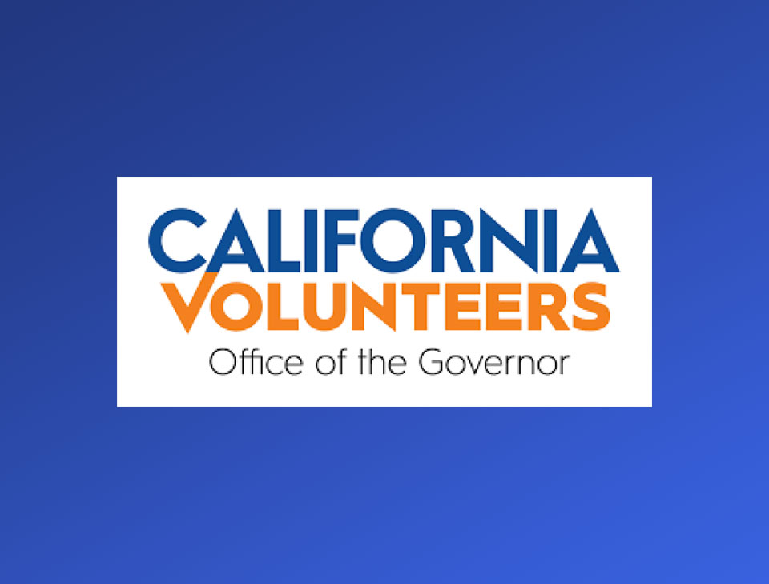
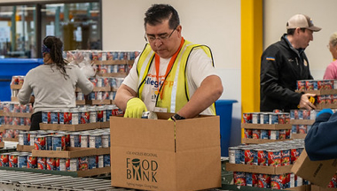

California Volunteers is a state-run initiative based in Sacramento that mobilizes residents to take part in civic action and volunteer programs that strengthen California communities. Whether it's planting trees, responding to wildfires, or supporting students in underfunded schools,California Volunteers harnesses the power of people to create positive change.
 